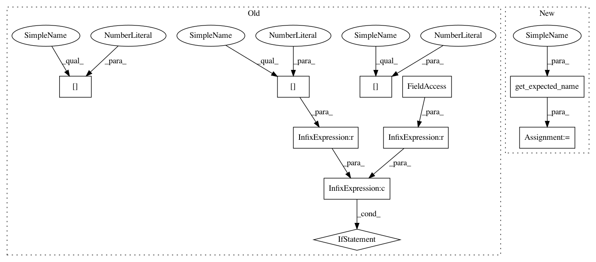

b06bd2db687d26f90bb49e76bf6612c489d6035d,pandas/tests/arithmetic/test_timedelta64.py,TestTimedeltaArraylikeAddSubOps,test_td64arr_add_sub_tdi,#TestTimedeltaArraylikeAddSubOps#Any#Any#,1211
Before Change
// GH/� make sure names are propagated correctly
box = box_with_array
if box is pd.DataFrame and names[1] != names[0]:
pytest.skip(
"Name propagation for DataFrame does not behave like "
"it does for Index/Series"
)
tdi = TimedeltaIndex(["0 days", "1 day"], name=names[0])
tdi = np.array(tdi) if box in [tm.to_array, pd.array] else tdi
ser = Series([Timedelta(hours=3), Timedelta(hours=4)], name=names[1])
expected = Series(
[Timedelta(hours=3), Timedelta(days=1, hours=4)], name=names[2]
)
ser = tm.box_expected(ser, box)
expected = tm.box_expected(expected, box)
result = tdi + ser
tm.assert_equal(result, expected)
assert_dtype(result, "timedelta64[ns]")
result = ser + tdi
tm.assert_equal(result, expected)
assert_dtype(result, "timedelta64[ns]")
expected = Series(
[Timedelta(hours=-3), Timedelta(days=1, hours=-4)], name=names[2]
)
expected = tm.box_expected(expected, box)
result = tdi - ser
After Change
// GH/� make sure result dtype is correct
// GH/� make sure names are propagated correctly
box = box_with_array
exname = get_expected_name(box, names)
tdi = TimedeltaIndex(["0 days", "1 day"], name=names[1])
tdi = np.array(tdi) if box in [tm.to_array, pd.array] else tdi
ser = Series([Timedelta(hours=3), Timedelta(hours=4)], name=names[0])
In pattern: SUPERPATTERN
Frequency: 3
Non-data size: 10
Instances
Project Name: pandas-dev/pandas
Commit Name: b06bd2db687d26f90bb49e76bf6612c489d6035d
Time: 2021-02-01
Author: jbrockmendel@gmail.com
File Name: pandas/tests/arithmetic/test_timedelta64.py
Class Name: TestTimedeltaArraylikeAddSubOps
Method Name: test_td64arr_add_sub_tdi
Project Name: pandas-dev/pandas
Commit Name: b06bd2db687d26f90bb49e76bf6612c489d6035d
Time: 2021-02-01
Author: jbrockmendel@gmail.com
File Name: pandas/tests/arithmetic/test_timedelta64.py
Class Name: TestTimedeltaArraylikeAddSubOps
Method Name: test_td64arr_sub_offset_index
Project Name: pandas-dev/pandas
Commit Name: b06bd2db687d26f90bb49e76bf6612c489d6035d
Time: 2021-02-01
Author: jbrockmendel@gmail.com
File Name: pandas/tests/arithmetic/test_timedelta64.py
Class Name: TestTimedeltaArraylikeMulDivOps
Method Name: test_td64arr_mul_int_series
Project Name: pandas-dev/pandas
Commit Name: b06bd2db687d26f90bb49e76bf6612c489d6035d
Time: 2021-02-01
Author: jbrockmendel@gmail.com
File Name: pandas/tests/arithmetic/test_timedelta64.py
Class Name: TestTimedeltaArraylikeAddSubOps
Method Name: test_td64arr_add_sub_tdi